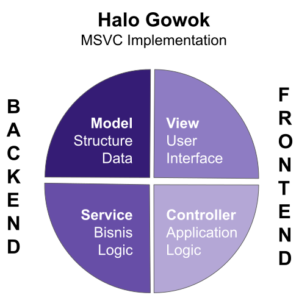

Model adalah tulang punggung dari kerangka aplikasi Anda. Di sinilah data disusun, dikelola, dan dihubungkan dengan dunia nyata. Apakah Anda mengelola informasi pengguna, produk, atau transaksi? Semuanya dimulai dari model yang kuat dan solid. Di sinilah cerita data dimulai, dan di sini pula aplikasi Anda mendapatkan pondasi yang kokoh. Bangun struktur data Anda dengan baik, dan lihat aplikasi Anda tumbuh dengan stabilitas yang tak tergoyahkan.
Jika model adalah pondasi, maka Service adalah otak yang memastikan semua berjalan dengan lancar. Service adalah lapisan logika bisnis Anda, tempat di mana setiap keputusan penting diambil dan setiap aturan bisnis dijalankan. Service menjembatani antara data dan kebutuhan pengguna, memproses data, memvalidasinya, dan memastikan segalanya berfungsi sesuai rencana. Dengan Service yang efisien, Anda dapat memodifikasi logika bisnis tanpa mengganggu komponen lain. Inilah rahasia untuk aplikasi yang cerdas dan mudah dikembangkan.
Pengguna Anda mungkin tidak peduli tentang bagaimana data dikelola di balik layar—yang mereka inginkan adalah pengalaman visual yang intuitif dan responsif. View adalah tempat interaksi pengguna terjadi, menggabungkan estetika dengan fungsionalitas. Saat pengguna berinteraksi dengan aplikasi Anda, view menyajikan data secara langsung, memperbarui antarmuka dengan mulus, dan memastikan pengalaman yang mulus dan menyenangkan. View Anda adalah wajah dari aplikasi, pastikan ia memberikan kesan terbaik.
Di balik layar, Controller adalah sutradara yang memastikan semua aktor di panggung aplikasi Anda memainkan perannya dengan sempurna. Controller menerima input dari pengguna, memprosesnya, dan menentukan langkah berikutnya. Dengan instruksi yang jelas, controller memandu alur kerja aplikasi Anda, memastikan data yang tepat dikirim ke tempat yang tepat, dan view diperbarui dengan cepat. Controller adalah sang pengatur orkestra, menjamin harmoni dalam aliran logika aplikasi Anda.
Bangun aplikasi dengan komponen terpisah yang mudah dikembangkan, diuji, dan diperbaiki. Modularitas memastikan pengelolaan kode yang rapi dan fleksibel.
MSVC mengurangi redundansi dengan memisahkan logika bisnis dan antarmuka, memungkinkan pengembang untuk fokus pada tugas yang benar-benar penting.
Dengan arsitektur yang mendukung pengembangan terdistribusi dan microservices, MSVC memungkinkan aplikasi berkembang bersama dengan bisnis Anda.
Fungsi utama MSVC adalah memisahkan komponen aplikasi menjadi lapisan yang berbeda untuk memudahkan pengembangan, pemeliharaan, dan pembaruan. MSVC menekankan pada pemisahan tugas, memungkinkan tim pengembang untuk bekerja secara efisien pada bagian aplikasi yang berbeda tanpa mengganggu bagian lain. Setiap lapisan (Model, Service, View, dan Controller) memiliki peran spesifik yang memperjelas tanggung jawab dan membuat kode lebih mudah dikelola.
Tujuan MSVC adalah menciptakan aplikasi yang mudah dikembangkan dan dipelihara. Dengan pemisahan yang jelas antara logika bisnis dan tampilan, pengembang dapat membuat perubahan tanpa risiko merusak bagian lain dari aplikasi. Arsitektur ini mendukung pengembangan aplikasi yang lebih besar dan kompleks, memastikan bahwa aplikasi tetap fleksibel dan mudah dikembangkan seiring pertumbuhan bisnis Anda.
Apakah Anda tertarik untuk mengetahui lebih lanjut tentang kerangka MSVC? Hubungi kami dan kami akan dengan senang hati membantu Anda.
Email: halo@gowok.id
Alamat: gowok.id